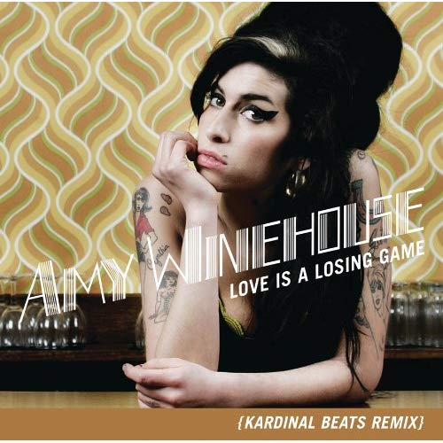

Winehouse’s career began in the year 2000 when she became a featured vocalist with the National Youth Jazz Orchestra at the age of 17. In 2002 she signed on to Simon Fuller’s 19 Management and became a regular jazz standards singer at the Cobden Club. She quickly became known for her deep vocals and eclectic mix of musical genres including jazz, soul, rhythm and blues. Winehouse released her debut album, Frank, on October 20, 2003. The album, which was mainly produced by Salaam Remi, went on to achieve platinum sales. In 2006 Winehouse released her award-winning album, Back to Black which included hit songs such as “Rehab” and “You Know I’m No Good.” Back to Black was the world’s seventh biggest selling album of 2008. In the years leading up to her death Winehouse’s career was marred by scandal and controversy. Her constant battle with drug and alcohol abuse began to threaten her career and often caused issues during her tours of Europe and South America. Her final appearance took place at Camden’s Roundhouse in London on July 20, 2011 three days before her death.
Published Work:


